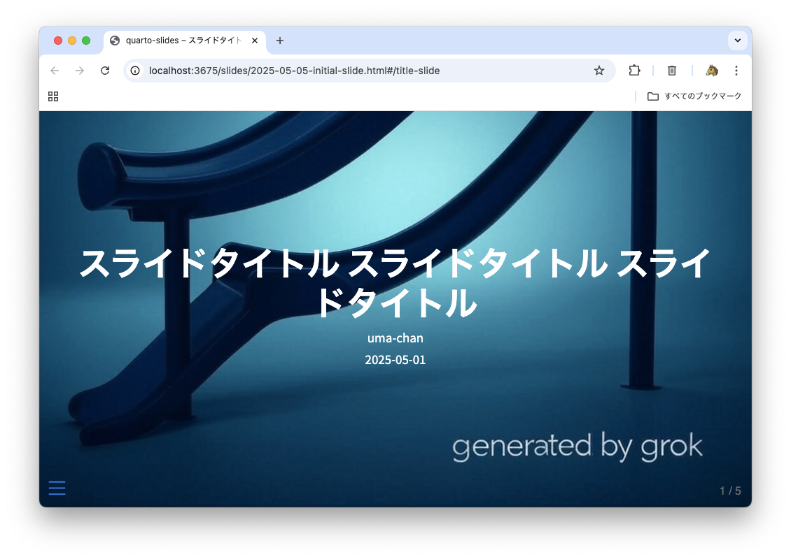
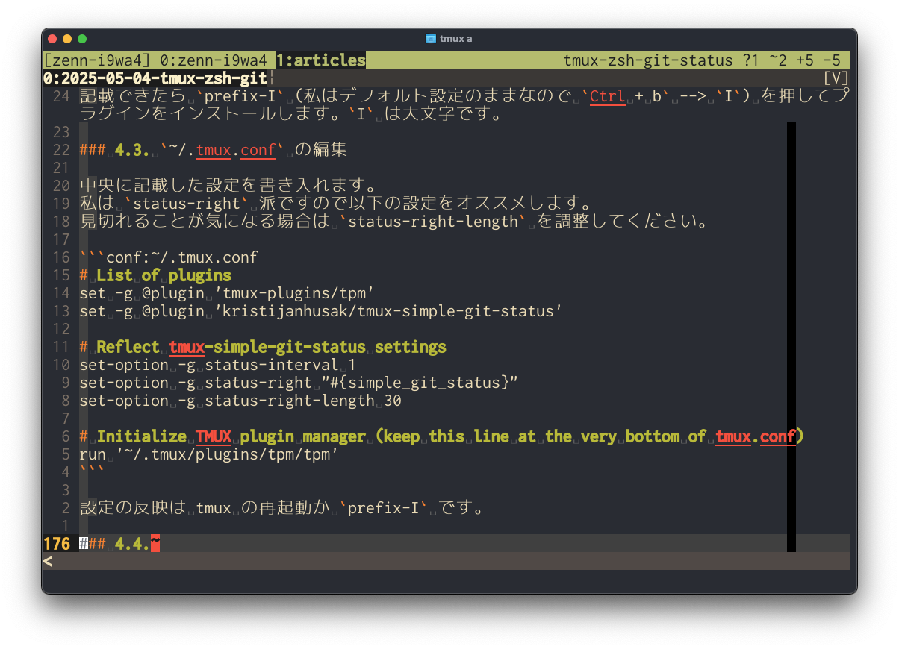

All blog (70) diary (10) memo (4) tech-ai (11) tech-data (8) tech-others (30) tech-vim (12) vim-jp (2)
Claude Code の進化を見るに機能はいずれ収斂して全員の手元に渡る。残るのは「自分の開発環境を構築できる力」。
dotfiles リポジトリで mise と pre-commit を活用していましたが、Nix 移行完了に伴い削除するのでここに知見を残します
AIなしには語れない2025年を振り返ります
mise + uv で JupyterLab 環境をセットアップする手順を解説します。
2025年のアウトプットを LAPRAS に出力してもらいました。
uv と Quarto を使ってブログやスライドを作成し、GitHub Pages で公開する方法を紹介します
Alacritty のテーマ切り替えと透過度変更を tmux キーバインドで操作する方法を紹介します
1,858コミット、42本の技術記事、4つのVimプラグイン。AI駆動開発に本格参戦した2025年の活動を数値とともに振り返ります
Vim と tmux で複数の AI エージェントの並列実行を実現するアイデアを共有します
BigQuery 上で dbt incremental モデルの dbt run 実行時間を40分短縮した手順を共有する
Codex CLI の設定ファイルを dotfiles で管理する方法について説明します。
2025-08-23 日誌
Databricks Connect でローカル開発環境から Databricks の Spark セッションを制御します
uv と pre-commit で Python 開発環境を最適化。 VS Code 以外のエディタや GitHub Actions でも統一された品質を保てます
Claude Code 対応の Dev Container 環境をサクッと構築。VS Code 以外のエディタでも恩恵を受けられます
Claude Code を便利に使うためのターミナル環境について共有します
Vim 本体への初コントリビューションの経緯と学びを共有します
tmux で Vim から Claude Code にテキストを送信する Vim プラグインの紹介
ローカル dbt で BigQuery への認証を行う
uv を使って Python のグローバルインストールを行う
Poetry の pyproject.toml を使って uv で .venv を作成する
Vim/Neovim の保存時の LSP フォーマットを :w! のときに無効化する方法
Databricks AI/BI ダッシュボードを Git flow で運用することにした経緯と実際の運用について
AWS Lambda で ECR にあるコンテナイメージを実行するために必要な全てのリソースを Terraform で構築し GitHub Actions でデプロイできるようにします
Bash/Zsh で入力中のコマンドをエディタで編集して実行する方法について書いています
今更ながら Vim に EditorConfig を導入しました。設定方法と感想を書いています。
Python venv 仮想環境のインストール・更新スクリプトを供養します

Markdown ライクな Quarto でスライドを作成して GitHub Actions で HTML 出力する方法を紹介します

tmux のステータスラインと Zsh プロンプトに Git リポジトリのステータスを表示させる方法を紹介します
Databricks MCP Server を Service Principal 認証対応させたものを公開しました
GitHub Profile 用のリポジトリで lefthook を活用していましたが、不要になり削除しようと思うのでここに知見を残します
Python のバージョンとライブラリのバージョンの不整合で発生したエラーの例を記録に残しておきます
MCP (Model Context Protocol) に入門してみました
Gemini API に課金したので手順をメモしておきます
個人的な重要記事などをまとめておきます
Devin に週報を書いてもらうためのプロンプトを用意して実際に週報を書いてもらったのでその内容を共有します
Devin に週報を書いてもらうためのプロンプト
2024年度に初めて経験したことを振り返ってみます
AI エージェント Aider を使ってみました
Notion データベースでリレーションプロパティ (列) にリレーション元のプロパティも併せて表示させる方法を紹介します
dbt モデルやダッシュボード向けの SQL を書くことが多いので戒めの意味も込めて見やすい SQL を書くための Tips をまとめてみました
最近の Vim プラグイン開発のアイデアを振り返ります
失敗していますが Instagram API のアクセストークンを取得する手順を途中まで書いておきます
データエンジニア3年目にして初めてダッシュボードを作成する機会を得たので時系列順に思ったことを書いていきます
Quarto の YAML ヘッダにコードを埋め込む方法についてのメモです。GitHub Actions で生成した値を埋め込むことができます。
OneDrive の設定変更手順をまとめました。デスクトップやドキュメントの同期を避けたい場合に役立つ内容です。
Mac で SnowSQL をセットアップする手順をまとめました
私が業務でよく利用する dbt のローカル開発環境の話をしていきます
Zenn の記事を GitHub リポジトリで管理する方法をまとめました
GitHub Actions をローカルで実行できる便利な OSS nektos/act を使ってみました
自分のキャリアについてぼんやり考えていたことを時系列順にまとめてみました
Renaming i9wa4 to uma-chan
最近の Vim プラグイン開発のアイデアをメモしておきます
Pandas の DataFrame をウェブサイト一覧表作成に転用するための実験記事
GitHub でブログやスライドを管理したい方にオススメな Quarto による GitHub Pages 公開手順を紹介します
千年戦争アイギスの自分用メモ
Minecraft の自分用メモ
たまに使うけど忘れてしまうような技術系の小ネタ (コマンド・設定) まとめ記事です
systemd がユーザー権限でも設定できる
これまで購入したガジェットの一覧
私の Mac 環境構築手順をまとめておきます
Quarto で作ったスライドを GitHub Pages にデプロイする方法について書いています
Vim script で Git ブランチ名を取得するプラグインを Gemini を使って書いてみました
データサイエンス100本ノックの実行環境構築 (WSL2)
初投稿！